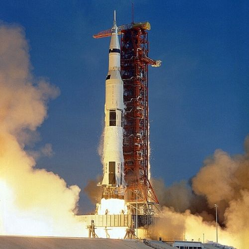

To Space.
Technology in Space.
About Space Technology
Space has always been apart of the unkown, leaving us humans to always be curious about it. Although the unknown, can be extremely scary, it leaves our minds to wonder about what could possibly be out there. Since our minds get the best of us, we started to develop technology that would help us learn about this beautiful yet, terrifying unknown. After numerous amounts of inventions and studies, we were able to answer a few of the questions that we believed would never know about. Hopefully, as time goes by, we will be so advanced that we will reach places that we deemed impossible to reach.
Few Favorites

Neil Armstrong. Astronaut.
First man to step on the moon with apollo 11.

Apollo 11. AS-506
Rocket that took the team of apollo 11 to the moon.
Photos
Second Page
Next adventureThird Page
One Last adventureMade by Alannah Pendergrass.